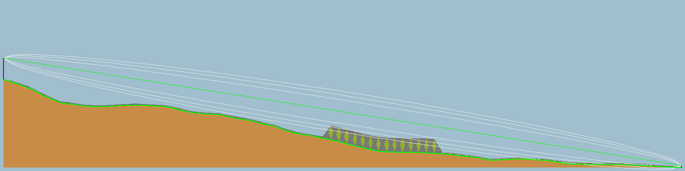
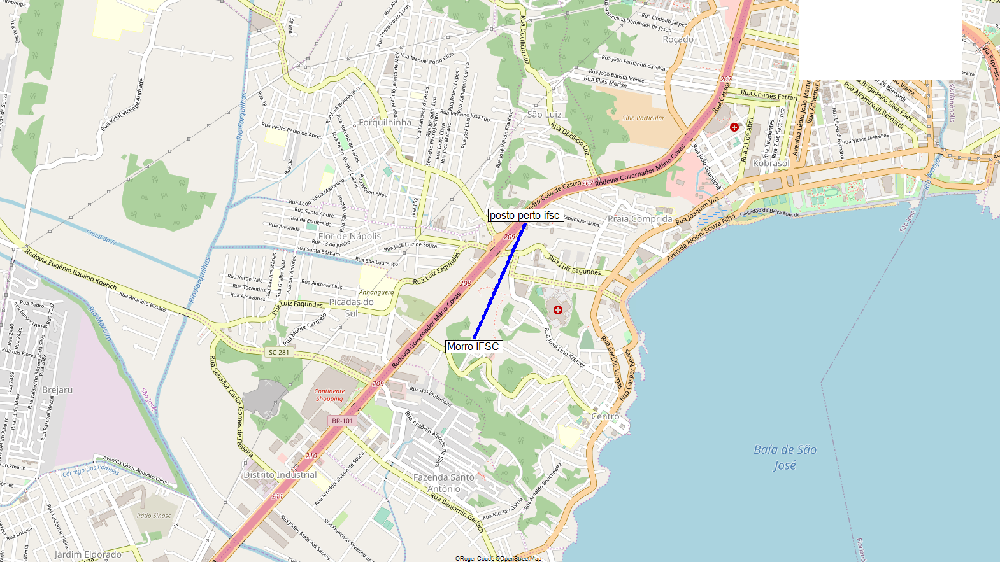

|  |
| caixa -> posto IFSC |
|---|
Morro IFSC (1)
| Latitude |
-27.611380 |
° |
| Longitude |
-48.636400 |
° |
| Ground elevation |
94.9 |
m |
| Antenna height |
15.0 |
m |
| Azimuth |
24.08 TN | 43.97 MG |
° |
| Tilt |
-5.11 |
° |
|
(2)
posto-perto-ifsc
| Latitude |
-27.604444 |
° |
| Longitude |
-48.632901 |
° |
| Ground elevation |
32.9 |
m |
| Antenna height |
1.5 |
m |
| Azimuth |
204.08 TN | 223.97 MG |
° |
| Tilt |
5.10 |
° |
|
Radio system
| TX power |
13.89 |
dBm |
| TX line loss |
0.00 |
dB |
| TX antenna gain |
0.00 |
dBi |
| RX antenna gain |
0.00 |
dBi |
| RX line loss |
0.00 |
dB |
| RX sensitivity |
-130.10 |
dBm |
| Propagation
| Free space loss |
90.20 |
dB |
| Obstruction loss |
-5.85 |
dB |
| Forest loss |
0.00 |
dB |
| Urban loss |
0.00 |
dB |
| Statistical loss |
6.46 |
dB |
| Total path loss |
90.80 |
dB |
|
Performance
| Distance |
0.845 |
km |
| Precision |
9.9 |
m |
| Frequency |
915.000 |
MHz |
| Equivalent Isotropically Radiated Power |
0.025 |
W |
| System gain |
143.99 |
dB |
| Required reliability |
70.000 |
% |
| Received Signal |
-76.91 |
dBm |
| Received Signal |
31.95 |
μV |
| Fade Margin |
53.19 |
dB |
|
|

|